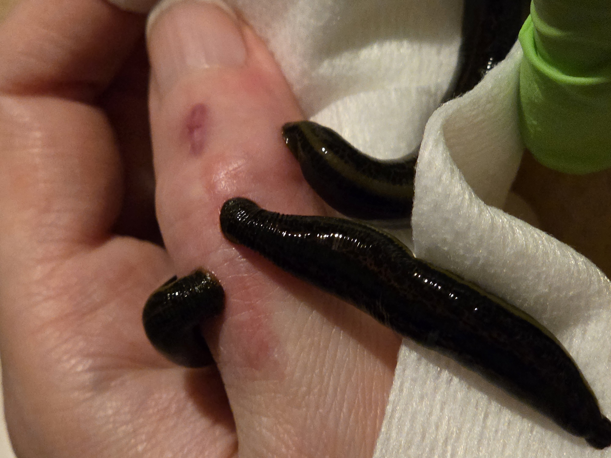
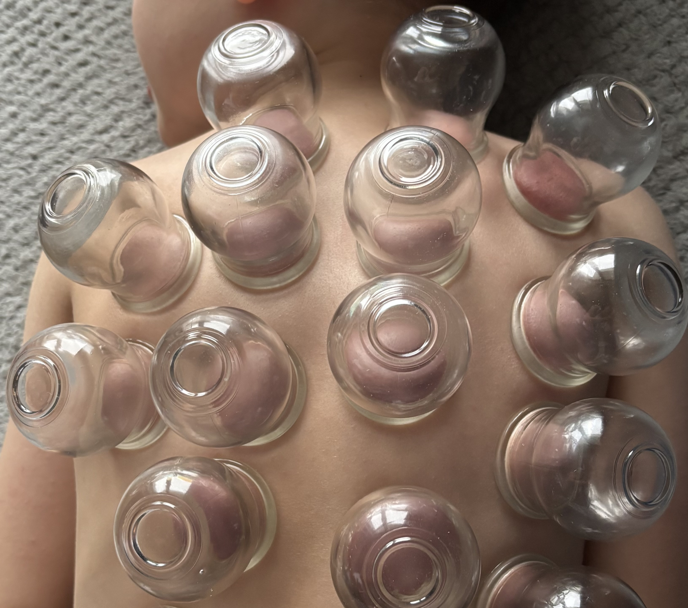
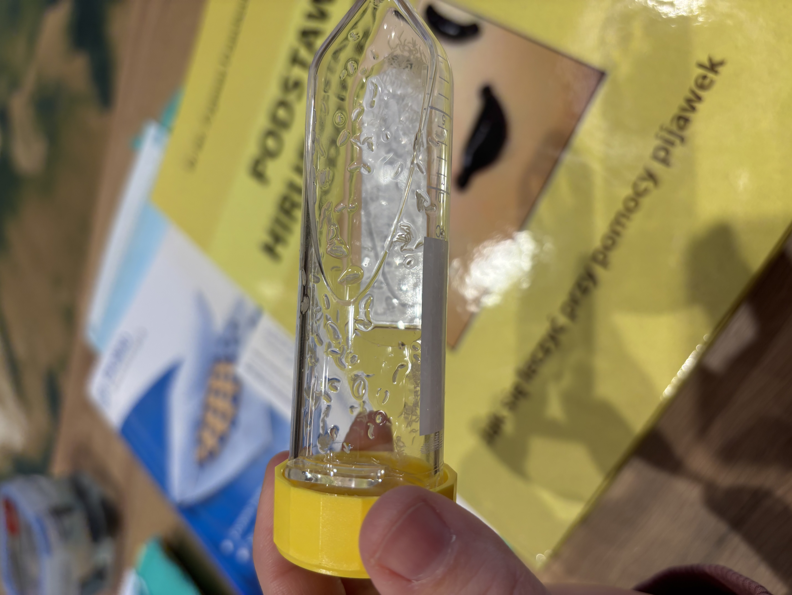
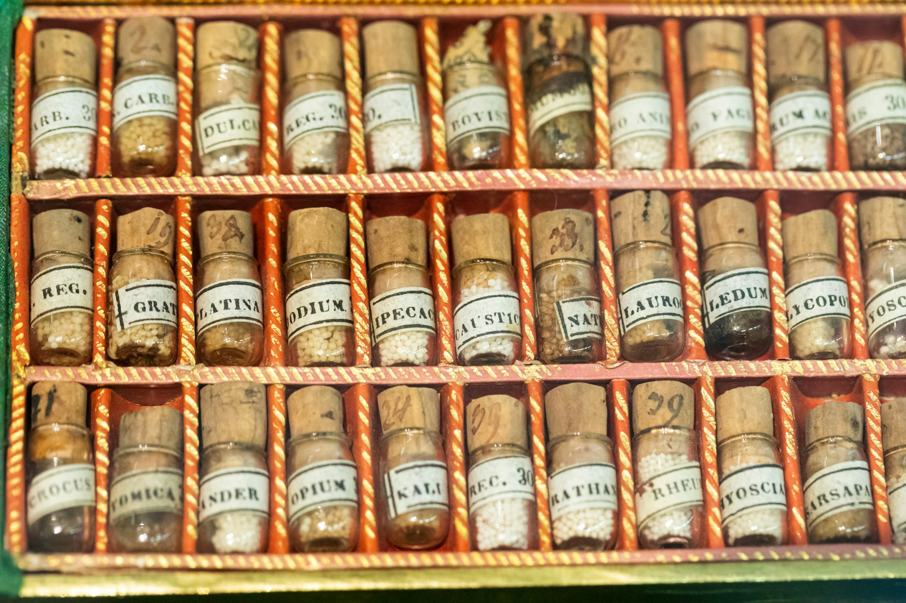
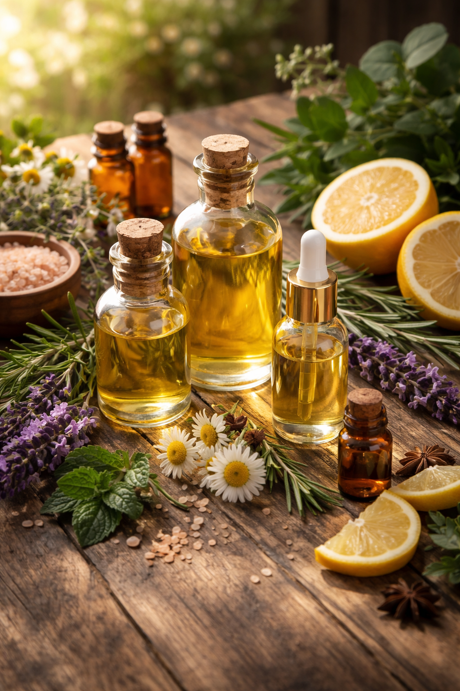
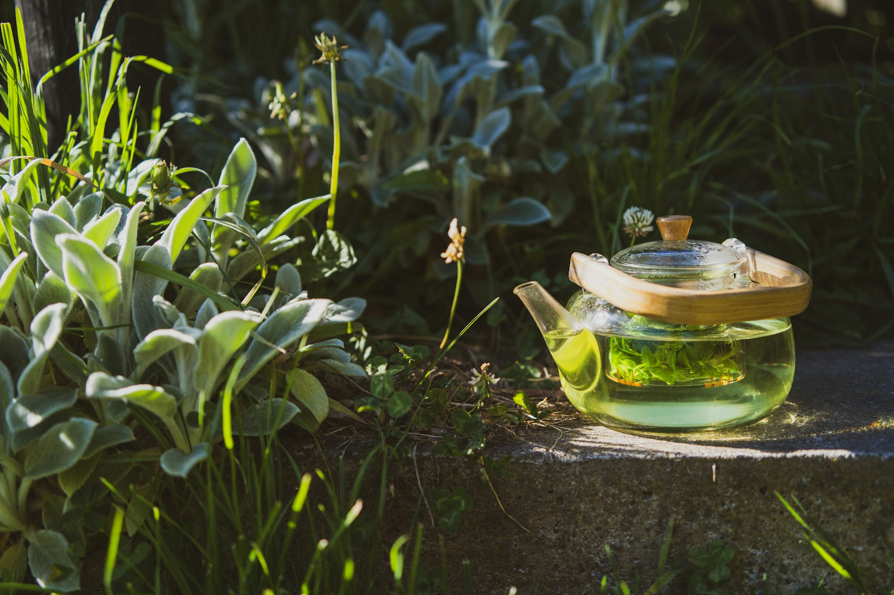
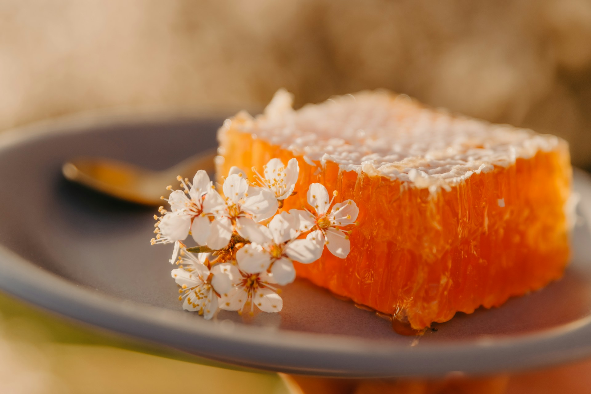
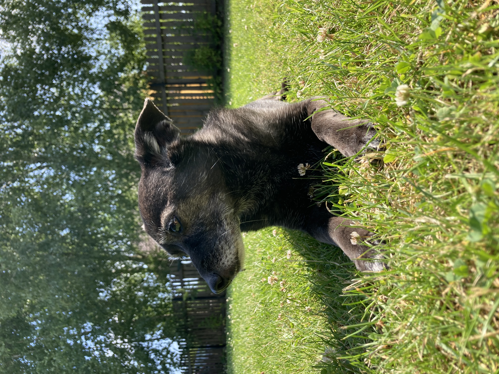

Jak pracuję?
W swojej pracy wykorzystuję następujące metody terapeutyczne:

Hirudoterapia – terapia pijawkami lekarskimi
To terapia polegająca na wykorzystaniu leczniczych właściwości śliny pijawek do wspierania zdrowia. W trakcie zabiegu, pijawkę przystawia się do skóry, przez którą przebija się swoimi szczękami i wpuszcza wraz ze śliną substancje terapeutyczne do organizmu chorego. Hirudoterapię stosuje się przy chorobach układu krążenia, żylakach, zakrzepicy, niektórych chorobach stawów, cukrzycy, wyrównuje ciśnienie krwi, hemoroidy i wiele innych. Pijawki są wykorzystywane także w nowoczesnej medycynie, szczególnie przy replantacji, mikrochirurgii, gdy trzeba poprawić ukrwienie przeszczepionych tkanek np. ucha. Pijawki (Hirudo verbana) są jednorazowe i pochodzą z certyfikowanej hodowli laboratoryjnej.
W ślinie pijawki jest ponad 150 przebadanych substancji aktywnych, m.in. hirudyna – zapobiega krzepnięciu krwi poprzez uniemożliwienie przekształcenia protrombiny w trombinę, hialuronidaza – silny antybiotyk oraz czynnik umożliwiający szybkie przenikanie przez błony komórkowe sąsiadujących ze sobą komórek i tkanek ciała, rozpuszcza składniki cukrowe ścian komórkowych przetrwalników wielu organizmów, bdeliny - hamują działanie czynników stanów zapalnych i ich rozprzestrzenianie się w tkankach, przyśpiesza gojenie ran, stymulują wzrost komórek nerwowych.

Bańki ogniowe
Celem stawiania baniek ogniowych jest wzmocnienie sił odpornościowych organizmu lub ich uaktywnienie, gdy nie wykazują samoistnego działania. Zabieg mobilizuje i wzmacnia mechanizmy samoleczące, w które natura wyposażyła człowieka. Działanie baniek polega głównie na przestrojeniu leczniczym, a tym samym na regulacji zaburzonych czynności organizmu, jak również zwalczaniu bólu i skurczów, pobudzeniu przekrwienia i hamowania procesów zapalnych. Rozluźnienie i redukcja napięć.

Larwoterapia
To metoda terapeutyczna wykorzystywana w oczyszczaniu trudno gojących się ran z użyciem specjalnie hodowanych sterylnych larw much z gatunku Lucilla sericata. Larwy te są nekrofagami, czyli organizmami, które odżywiają się TYLKO tkanką martwą, bez naruszenia żywych komórek. Substancje wydzielane przez larwy niszczą nie tylko bakterie (np. Streptococus) ale również wirusy i grzyby. Wydzieliny larw zawierają również dezoksyrybonukleazy (DNAzę) zdolne do rozkładania zarówno DNA drobnoustrojów, a także ludzkiego DNA w tkankach martwiczych. DNAza może odgrywać istotną rolę nie tylko w oczyszczaniu, ale również hamowaniu wzrostu bakterii i biolifmu.

Homeopatia
Jest to terapia stosowana w naturoterapii. Wykorzystuje środki pochodzenia naturalnego w bardzo małym stężeniu, które działają w myśl zasady: podobne należy leczyć podobnym. Środki, które w normalnej dawce wywołują objawy choroby, w bardzo dużym rozcieńczeniu je niwelują. HomeopaƟa skupia się na podejściu holistycznym, czyli odnosi się do całej osoby, a nie poszczególnych objawów. Dlatego też pierwsza wizyta u homeopaty trwa dosyć długo, ponieważ zbiera on informacje o dokuczliwych objawach, ale także poszukuje innych oznak i wskazówek, które chory mógł zbagatelizować, traktując je jako mało ważne.

Terapia wodorem
Terapia wodorem oferuje wiele korzyści zdrowotnych przydatnych w różnych stanach klinicznych. Wodór molekularny jako selektywny antyoksydant neutralizuje szkodliwe wolne rodniki. Zachowuje przy tym te, które są potrzebne do prawidłowych procesów biologicznych. Mała cząsteczka wodoru łatwo przenika przez barierę krew-mózg, docierając do trudno dostępnych miejsc.
Lampy lecznicze
Terapia światłem niskiego poziomu, czyli fotobiomodulacja, opiera się na technologii diod elektroluminescencyjnych (LED) i polega na zastosowaniu energii świetlnej na organizmu w celu uzyskania korzyści terapeutycznych. Wykazano, że energia dostarczana przez diody LED poprawia metabolizm komórkowy, przyspiesza naprawę i uzupełnianie uszkodzonych komórek skóry, a także stymuluje produkcję kolagenu – podstawy zdrowej, gładkiej i młodej skóry.
Suplementacja (indywidualna i rozsądna)
Celem suplementacji powinno być uzupełnienie realnych niedoborów, a nie stosowanie preparatów „na wszelki wypadek”. Dlatego przed jej rozpoczęciem warto przeanalizować sposób żywienia, styl życia, przyjmowane leki oraz stan zdrowia.

Aromaterapia
Aromaterapia to terapia wspomagająca zdrowie i samopoczucie poprzez użycie naturalnych olejków eterycznych, które są wydobywane z roślin: kwiatów, liści, kory, korzeni czy owoców. Jest to metoda holistyczna, co oznacza, że działa zarówno na ciało, jak i na umysł oraz emocje. Wdychanie olejków wpływa na układ limbiczny w mózgu, który reguluje emocje, pamięć i reakcje hormonalne.
Stosowanie na skórę pozwala na wchłanianie składników aktywnych przez naskórek, działając m.in. przeciwbólowo i przeciwzapalnie. Jakie efekty daje aromaterapia? Poprawa jakości snu, łagodzenie bólów głowy, wsparcie układu odpornościowego. Olejek lawendowy relaksuje i poprawia jakość snu, eukaliptus działa antybakteryjnie oraz ułatwia oddychanie. Olejki stosujemy tylko w rozcieńczeniu. W Polsce jest zakaz używania olejków wewnętrznie.

Fitoterapia
To dziedzina medycyny i nauk o zdrowiu, która zajmuje się wspieraniem zdrowia oraz profilaktyką za pomocą ziół, poprzez stosowanie naparów, ekstraktów, nalewek, maści, kremów. Wykorzystuje rośliny o potwierdzonym działaniu. Preparaty mają często standaryzowaną ilość substancji aktywnych. Terapie są dobierane indywidualnie po obszernym wywiadzie z podopiecznym.

Apiterapia
To prozdrowotne wykorzystanie produktów pszczelich, to terapia oparta na korzystaniu z naturalnych składników produkowanych przez pszczoły. To starożytna forma terapii ma długą historię stosowania w różnych kulturach i odgrywa coraz większą rolę w naturoterapii. Produkty apiterapeutyczne to na przykład: miód, mleczko pszczele, pyłek i inne.

Terapie dla małych zwierząt
Dla zwierząt terapie z zakresu hirudoterapii oraz fitoterapii prowadzone są z uwzględnieniem fizjologii, zachowania, stanu zdrowia oraz bezpieczeństwa.